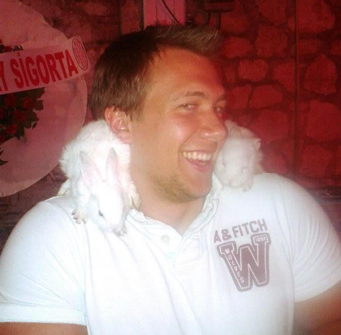
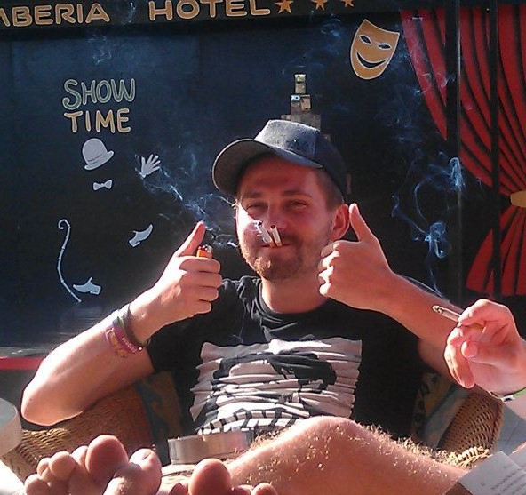
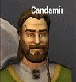

Whilst we can assert with a reasonable degree of confidence that:
Cav + Freshspawns + drinking = FUN
Voltaire mused that absolute certainty was an absurd proposition. To mitigate the likelihood of an underwhelming gathering, the predictive powers of this logarithm will enable the user to forsee all possible eventualities prior to a night-out.
In this scenario, the well established Freshspawns have embarked on a day trip to the Cavendish bar in West Street, Sheffield. After multiple jars, an opportunity to introduce a series of familiar companions presents itself.
Cav + Freshspawns + drinking = FUN
Voltaire mused that absolute certainty was an absurd proposition. To mitigate the likelihood of an underwhelming gathering, the predictive powers of this logarithm will enable the user to forsee all possible eventualities prior to a night-out.
In this scenario, the well established Freshspawns have embarked on a day trip to the Cavendish bar in West Street, Sheffield. After multiple jars, an opportunity to introduce a series of familiar companions presents itself.
FRESHSPAWNS |
|||
|---|---|---|---|
 ATTRIBUTES:
ATTRIBUTES:Chatability:9 Sociability:5 Flexibility:8 Reliability:10 Durability:10 The seediest of seedy dwarves, Jonny Heaton has established himself as a stalwart of the Sheffield bar scene due to his impeccable reliabilty and durability. Though particularly wary of loud-mouthed newcomers, he always has room for another peon under his considerable wing JONNY HEATON |
 ATTRIBUTES:
ATTRIBUTES:Chatability:7 Sociability:9 Flexibility:10 Reliability:10 Durability:8 If the chatability of this freshspawn can sometimes suddenly and inexplicably falter, Luke Carter's sheer dexterity and unparalelled cadence more than makes up for it. Whilst rumours of him appearing in two places at once on a night out have been circulated, they have never been confirmed LUKE CARTER |
 ATTRIBUTES:
ATTRIBUTES:Chatability:9 Sociability:9 Flexibility:7 Reliability:7 Durability:4 A freshspawn for any occasion, Michael Graham's unique blend of sociability and chatability is sure to breathe life into even the dryest of functions. The brightest stars exhaust their available hydrogen the quickest though, so don't be surprised if he goes supernova, leaving nothing but a black hole where he once stood MICHAEL GRAHAM |
 ATTRIBUTES:
ATTRIBUTES:Chatability:9 Sociability:7 Flexibility:8 Reliability:5 Durability:9 The seediest of seedy dwarves, Jonny (or Bob Boomstrom to his adoring backroom staff) WILLIAM KEOGH |
COMPANIONS |
|||
|---|---|---|---|

ATTRIBUTES:
Chatability:7 Sociability:8 Flexibility:6 Reliability:6 Durability:7 The seediest of seedy dwarves, Jonny (or Bob Boomstrom to his adoring backroom staff) ANDREW MOORE |
 ATTRIBUTES:
ATTRIBUTES:Chatability:3 Sociability:8 Flexibility:4 Reliability:4 Durability:7 The seediest of seedy dwarves, Jonny (or Bob Boomstrom to his adoring backroom staff) RICHARD WILSON |

ATTRIBUTES:
Chatability:6 Sociability:6 Flexibility:7 Reliability:5 Durability:10 The seediest of seedy dwarves, Jonny (or Bob Boomstrom to his adoring backroom staff) JAMES WASS |
 ATTRIBUTES:
ATTRIBUTES:Chatability:3 Sociability:8 Flexibility:8 Reliability:9 Durability:8 The seediest of seedy dwarves, Jonny (or Bob Boomstrom to his adoring backroom staff) ANDREW TOWLER |
 ATTRIBUTES:
ATTRIBUTES:Chatability:7 Sociability:7 Flexibility:7 Reliability:7 Durability:9 The seediest of seedy dwarves, Jonny (or Bob Boomstrom to his adoring backroom staff) FINLEY THOMPSON |
 ATTRIBUTES:
ATTRIBUTES:Chatability:6 Sociability:6 Flexibility:6 Reliability:6 Durability:6 The seediest of seedy dwarves, Jonny (or Bob Boomstrom to his adoring backroom staff) ELLIOT SAUNDERS |
 ATTRIBUTES:
ATTRIBUTES:Chatability:5 Sociability:8 Flexibility:9 Reliability:7 Durability:7 The seediest of seedy dwarves, Jonny (or Bob Boomstrom to his adoring backroom staff) ALEX OYSTON |
 ATTRIBUTES:
ATTRIBUTES:Chatability:2 Sociability:4 Flexibility:8 Reliability:7 Durability:4 The seediest of seedy dwarves, Jonny (or Bob Boomstrom to his adoring backroom staff) TOM |
BOTS |
|---|

ATTRIBUTES:
Chatability:9 Sociability:5 Flexibility:8 Reliability:10 Durability:10 The seediest of seedy dwarves, Jonny (or Bob Boomstrom to his adoring backroom staff) CANDAMIR |